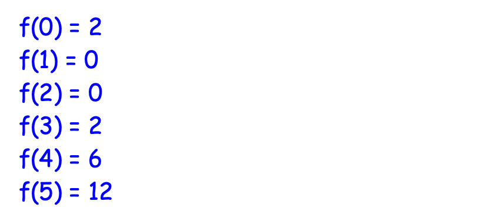
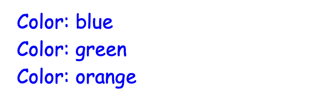
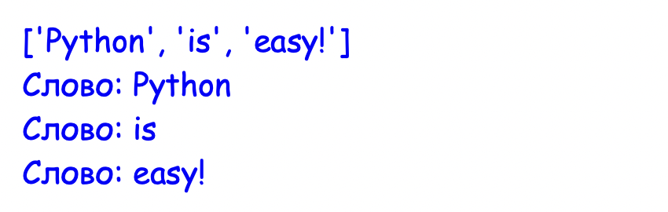
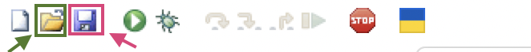

Частина 1 — Що таке return і навіщо він потрібен
Частина 1 — Що таке return і навіщо він потрібен
▶
Повторення
- Що пропущено на місці ❓?
- Як викликати функцію, щоб вона вивела "Hello, Alice"?
Очікування запуску...
Різниця між print() та return
До цього уроку ми писали функції, які просто виконували якусь дію на екрані. Щоб комп'ютер показав нам числа чи текст, ми використовували print().
Але print() може лише показати результат обчислень, але ніде його не зберігає для подальшої роботи. Щоб функція створила результат, який комп'ютер зможе запам'ятати, існує команда return ("повернути").
🍕 Аналогія з піцою:
- print() — це коли кур'єр просто показує тобі піцу через вікно і йде геть. Ти її побачила, але з'їсти не можеш.
- return — це коли кур'єр віддає піцу тобі прямо в руки. Тепер ти можеш з'їсти її, покласти в холодильник, тощо.
# Функція, яка просто виконує дію
def square(x):
print(x * x)
square(5)# Функція, яка повертає результат
def square(x):
return x * x
print(square(5))Функція з return буквально перетворюється на те значення, яке повертає. Це значення можна використати одназу (наприклад, передати в print()), або ж зберегти у змінну:
# Викликаємо функцію і зберігаємо те, що вона повернула, у змінну result
result = square(5)
# Тепер можемо робити з цим числом що завгодно
print(f"5 squared is {result}")Код виконується справа наліво:
result = square(5)
↓
права частина: square(5) → return 5*5 → 25
↓
result = 25Ще один приклад:
def hello():
return "Hello"
print(hello() + "!!!")Функція поводиться так, ніби замість неї вже стоїть рядок "Hello".
Тест
✍️ Заміни фунцію get_bonus, щоб змінна answer змогла зберегти результат і успішно вивести 100.
Очікування запуску...
✍️ Міні-вправа: Знайди і виправ помилку в коді.
Очікування запуску...
 Практика 1
Практика 1
▶
Завдання 1.1: Перетворення температур
Напиши функцію celsius_to_fahrenheit(c), яка повертає температуру у Фаренгейтах. Формула: F = C × 9/5 + 32.
Використай цю функцію двома способами:
- Одразу передай результат в print().
- Спершу збережи результат у змінній, а тоді вже надрукуй.
Завдання 1.2: Ім'я та ініціали
Напиши дві функції:
- make_full_name(first, last) — повертає повне ім'я: "Анна Коваленко"
- make_initials(first, last) — повертає ініціали: "А. К."
Використання:
f = "Анна"
l = "Коваленко"
name = ...
initials = ...
print(name) # Анна Коваленко
print(initials) # А. К.
print(f"Підпис: {name} ({initials})")
Завдання 1.3: Скільки секунд?
Напиши функцію to_seconds(hours, minutes, seconds), яка повертає загальну кількість секунд.
Перевірка роботи:
print(to_seconds(1, 0, 0)) # 3600
print(to_seconds(0, 30, 0)) # 1800
print(to_seconds(1, 30, 45)) # 5445Далі використай цю функцію, щоб дізнатися:
- Скільки секунд в добі?
- Скільки секунд в тижні?
day = ...
week = ...
print(f"У добі: {day} секунд")
print(f"У тижні: {week} секунд")
Завдання 1.4: Що повертає ця функція?
Cпробуй пояснити, що робить кожен рядок, і передбачити результат цього коду:
def double(x):
return x * 2
def message(text):
return f"[{text}]"
a = double(5)
b = double(a)
c = message("Python")
d = message(double(3))
print(a)
print(b)
print(c)
print(d)
print(double(double(double(2))))
Частина 2 — Як використовувати результат функції
▶
Функція перетворюється на своє значення
Як ми вже визначили, сила return полягає в тому, що під час виконання програми виклик функції буквально замінюється на її результат. Якщо твоя функція повертає число 10, ти можеш ставитись до виклику цієї функції так, ніби це і є число 10.
Ось два способи як можна використати цей результат:
def get_points():
return 50
# 1. Одразу надрукувати
print(f"У тебе {get_points()} балів!")
# 2. Зберегти у змінну
points = get_points()
print(f"У тебе {points} балів!")Функція як частина формули
Оскільки функція з return поводиться як звичайне число (або рядок), ми можемо додавати, множити або віднімати від неї інші значення.
def double(x):
return x * 2
# Додаємо число до результату функції
print(double(5) + 3)
# Або використовуємо результат у формулі
total_score = double(8) + double(2)
print("Загальний рахунок:", total_score)Естафета: з однієї функції в іншу
Можна передати результат роботи однієї функції як вхідні дані для іншої.
def centimeters_to_meters(cm):
return cm / 100
def meters_to_kilometers(m):
return m / 1000
meters = centimeters_to_meters(350)
km = meters_to_kilometers(meters)Або:
km = meters_to_kilometers(centimeters_to_meters(350))Саме так будуються справжні великі програми: з маленьких, простих функцій, які легко перевірити і які обмінюються даними між собою завдяки return.
Тест
✍️ Допиши код так, щоб результат роботи першої функції (double) передавався у другу функцію (add_five).
Очікування запуску...
✍️ Яким буде результат цього коду?
Очікування запуску...
Практика 2
▶
Завдання 2.1: Математична функція f(x)
На уроках математики ти могла бачити такий запис: f(x) = x2 − 3x + 2. Це і є функція — правило, яке перетворює x на результат. В Python це записується буквально так само.
Напиши функцію f(x) яка повертає результа обчислення x2 − 3x + 2.
Використай цикл for i in range(...):, щоб знайти результат функції для x = 0, 1, 2, 3, 4, 5:

Завдання 2.2: Ланцюжок функцій: аналіз слова
Напиши дві функції:
- clean(word) — повертає слово без пунктуації по краях і в нижньому регістрі (.strip(".,!?;:()[] ").lower())
- first_letter(word) — повертає першу літеру слова
Потім використай їх разом. Для кожного слова зі списку надрукуй: "The word [clean word] starts with [first letter] and has [x] letters in total"
test_words = ["Hello!", " cat,", "Python.", "(easy?)"]
Завдання 2.3: Формула Герона
З геометрії: площу трикутника можна знайти лише за довжиною трьох сторін — без висоти — за формулою Герона.
- s = (a + b + c) / 2 - напівпериметр
- area = √(s(s-a)(s-b)(s-c)) - площа
Напиши дві функції:
- perimeter(a, b, c) – шукає периметр трикутника
- heron(a, b, c) – шукає площу трикутника (використовує perimeter щоб знайти напівпериметр)
Перевірка роботи:
print(heron(3, 4, 5)) # 6.0
print(heron(5, 5, 5)) # ≈ 10.83
print(heron(6, 8, 10)) # 24.0Для трикутника зі сторонами (3, 4, 5) знайди, що більше – його площа чи периметр? (> та if/else)
Частина 3 — Early Return (Ранній вихід)
▶
Return — це кнопка "Стоп"
Команда return робить дві речі одночасно: вона віддає результат і миттєво зупиняє роботу функції. Щойно комп'ютер натрапляє на return, він виходить із функції. Будь-який код, написаний нижче, просто ніколи не виконається.
def test_function():
return "Готово!"
print("Цей текст ніколи не з'явиться на екрані")
return "Інший результат"
# Функція зупиниться на першому ж return
print(test_function()) # Виведе лише "Готово!"Суперсила: позбуваємося зайвих else
Оскільки return зупиняє функцію, ми можемо використовувати це, щоб уникнути складних конструкцій з if/elif/else. Такий підхід називається Early Return (ранній вихід).
# ❌ Довгий варіант:
def check_age_old(age):
if age < 18:
result = "Дитина"
else:
result = "Дорослий"
return result# ✅ Early Return:
def check_age_pro(age):
if age < 18:
return "Дитина"
return "Дорослий" Захист від помилок (Guard Clauses)
Early Return ідеально підходить для того, щоб перевіряти дані на наявність помилок на самому початку функції. Якщо дані погані (наприклад, спроба зняти в банкоматі більше грошей, ніж є на рахунку) — ми одразу робимо return з повідомленням про помилку. А якщо все добре — функція продовжує свою роботу.
def withdraw_money(balance, amount):
# Охоронна перевірка на самому початку
if amount > balance:
return "Помилка! Недостатньо коштів на рахунку."
# Якщо грошей вистачає, код спокійно дійде сюди
new_balance = balance - amount
return f"Успішно знято {amount} грн. Залишок: {new_balance} грн."
print(withdraw_money(1000, 1500)) # Виведе "Помилка! Недостатньо коштів..."
print(withdraw_money(1000, 200)) # Виведе "Успішно знято 200 грн..."Тест
✍️ Додай перевірку: якщо вік менший за 0, одразу поверни текст "Помилка".
Очікування запуску...
✍️ Як думаєш, чому "В" не друкується?
Очікування запуску...
Практика 3
▶
Завдання 3.1: Безпечний квадратний корінь
math.sqrt не вміє рахувати корінь з від'ємного числа — програма зламається.
Напиши функцію safe_sqrt(x):
- Якщо x < 0 — одразу поверни рядок "Помилка: корінь з від'ємного числа"
- Інакше — поверни math.sqrt(x)
Завдання 3.2: Валідатор трикутника
Напиши функцію triangle_type(a, b, c), яка:
- Якщо будь-яка сторона <= 0 — повертає "Помилка: сторони мають бути додатними"
- Якщо сума двох будь-яких сторін не більша за третю — повертає "Такого трикутника не існує"
-
Інакше визначає тип:
- "Рівносторонній" – всі сторони рівні
- "Рівнобедрений" – будь-які дві сторони рівні
- "Різносторонній" – всі сторони різні
Перевірка:
print(triangle_type(0, 3, 4)) # Помилка: сторони мають бути додатними
print(triangle_type(1, 2, 10)) # Такого трикутника не існує
print(triangle_type(5, 5, 5)) # Рівносторонній
print(triangle_type(5, 5, 3)) # Рівнобедрений
print(triangle_type(3, 4, 5)) # Різносторонній
Домашнє завдання: Повторення та метод .split()
▶
Повторення: Списки та цикли
Давай згадаємо, як працюють списки (lists). Список — це "коробка", в якій лежить багато елементів по порядку.
Щоб перебрати всі елементи списку один за одним, ми використовуємо цикл for:
my_list = ["blue", "green", "orange"]
for color in my_list:
print("Color:", color)
До списку можна додавати нові елементи з допомогою методу .append().
Можна створити порожній список [], а потім у циклі поступово заповнити його даними:
big_words = []
small_words = ["hi", "ok", "yes"]
for word in small_words:
big_word = word.upper()
big_words.append(big_word)
print(big_words) # ['HI', 'OK', 'YES']Те саме можна записати трохи коротше:
big_words = []
for word in ["hi", "ok", "yes"]:
big_words.append(word.upper())
print(big_words)Ще раз уважно перечитай два приклади коду вище, і переконайся, що розумієш, як вони працюють і чим відрізняються.
Метод .split() — ділимо текст на частини
Іноді потрібно перетворити цілий текст на окремі слова. В Python є для цього зручний інструмент — метод рядків .split() (з англ. "розділити").
Він ділить рядок тексту там, де є пробіли, і повертає список слів.
🌻 Спосіб 1: Зберегти список у змінну, а потім перебрати
text = "Python is easy!"
# Створюємо список слів
words_list = text.split()
print(words_list) # ['Python', 'is', 'easy!']
# Тепер можемо перебрати його циклом
for w in words_list:
print("Слово:", w)🌻 Спосіб 2: Передати список одразу в цикл for
Якщо не потрібно зберігати список слів у змінну, можна викликати .split() прямо в рядку з циклом:
text = "Python is easy!"
for w in text.split():
print("Слово:", w)Обидва способи дають однаковий результат:

Домашнє завдання: Практика
▶
Завдання 4.1: Функція clean_word
Напиши функцію clean_word(word), яка приймає слово і:
- Видаляє з нього зайві знаки пунктуації та пробіли по краях.
- Перетворює всі літери на маленькі.
- Повертає очищене слово.
Перевір свою функцію на цьому коді:
w1 = clean_word(" Hello! ")
w2 = clean_word("...Python?")
print(w1) # "hello"
print(w2) # "python"
Завдання 4.2: Функція get_words
Напиши функцію get_words(text), яка приймає великий шматок тексту та перетворює його на список ідеально чистих слів. В кінці функція повинна повернути цей список.
Підказка: Використай порожній список, цикл for, .append(), .split(), а також свою готову функцію clean_word з попереднього завдання.
Перевір свій код:
my_text = "Hello, world! Python is fun..."
final_words = get_words(my_text)
print(final_words)
# Має вивести: ['hello', 'world', 'python', 'is', 'fun']❗️ Збережи цей код у файлі (наприклад, text_functions.py). Цей файл має знаходитися там, де ти легко зможеш його знайти. Наприклад, можна створити папку Python на робочому столі.

Кнопка, обведена рожевим, дозволяє зберігати файли, а зеленим – відкривати існуючі файли.